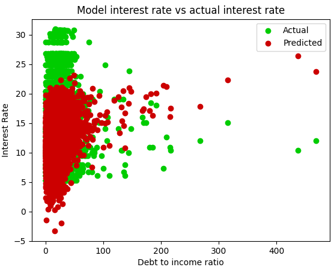

After running a linear regression algorithm on the model, here's what I got for the coefficients:
[ 3.03366837e-05, -1.10408271e-02, 5.02931914e-03, 2.81778107e-01, -1.45356305e-06, -5.63404400e-01, 2.75768184e-02, -2.92418292e-06, 4.30769183e-01, 8.80534996e-02, 4.50868009e-01, -5.28780948e-03, 3.32207956e-03, 1.71239860e-01, -2.41193145e-02, 6.95146617e-02, -1.92515569e-06, 8.43403181e-06, 6.38795564e-01, 5.88824515e-02, 4.28525781e-04, 4.92720383e-06, -1.08710268e-02, 2.02425699e-01, -4.13896185e-03, -1.20926887e-01, 1.23952804e-01, -4.34814358e-05, -2.95677315e-02, -9.62905820e-02, 3.06106100e-01, -2.44778563e-01, -1.86914667e-02, -1.38695411e-02, 7.27519925e-02, -7.52444099e-02, -3.85250789e-01, 1.39209712e-05, 1.67127192e-01]
This may not mean much to the average reader, so let me say that the mean squared error for this algorithm was 16.60. This means that the average difference between the predicted and actual interest rate was about 4.07. One doesn't need any visualizations to know that this isn't a very good prediction model. With a maximum interest rate of just over 30 percent, this means that the predicted interest rate for any given input would be off by 4.07 percentage points on average! Clearly, linear regression is not the way to go in this scenario.
As seen in this graph, the linear regression got the basic shape of most variables correct but completely broke down when it came to point-to-point accuracy. Furthermore, data points with larger values tend to have greater differences between actual and predicted interest rates.
I attempted to make a neural net using my current knowledge in MIT's Machine Learning class, but we've only been doing theoretical machine learning algorithms and thus I didn't have time to make one using Numpy. I sincerely apologize for not having a second algorithm ready.